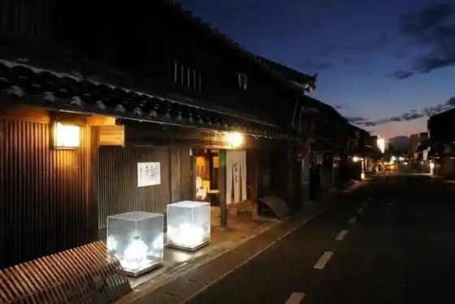
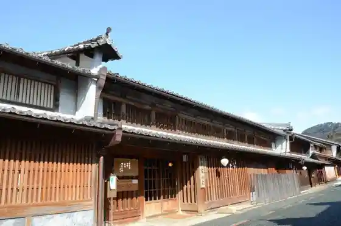
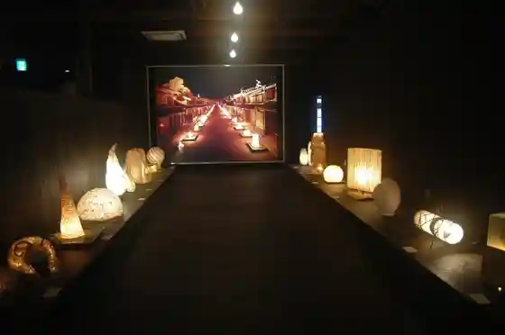

Udatsu no Aga Ru Streetscape
Mino, Gifu · 0575-35-3660 · Official / source link

Mino Washi no Sato Hall
Mino, Gifu · 0575-34-8111 · Official / source link
Oya Ta Jinja Momiji Tani
Mino, Gifu · 0575-35-3660 · Official / source link
Kyu Imai Ie House Mino Shiryo Kan
Mino, Gifu · 0575-33-0021 · Official / source link

Mino Washi Akari Ato Kan
Mino, Gifu · 0575-33-3772 · Official / source link

Streetscape Gyararii Yamada Ie House
Mino, Gifu · 0575-35-2727 · Official / source link
Roadside Station Mino Niwaka Chaya
Mino, Gifu · 0575-33-5002 · Official / source link
Ue Ari Chi Minato (Kawaminato Lighthouse)
Mino, Gifu · Official / source link
Ogura Park (Ogura Yama Castle Ruins)
Mino, Gifu · Official / source link
Kyumei Tetsu Mino Eki
Mino, Gifu · Official / source link
Udatsu no Town Ie no Ohina Sama
Mino, Gifu · 0575-35-3660 · Official / source link
Udatsu no Town Ie no Gogatsu Sekku
Mino, Gifu · 0575-35-3660 · Official / source link
Hen Chi Gorge
Mino, Gifu · Official / source link
Mino Washi Zakka Taiken Shoppu Ishikawa Shigyo
Mino, Gifu · 0575-29-3680 · Official / source link
Shokunin no Workshop De, Mino Te Suki Washi Wo Sosaku
Mino, Gifu · 058-269-3858 · Official / source link
Mino Kanko Yana
Mino, Gifu · 0575-35-2767 · Official / source link
Su Hara Himawari Village
Mino, Gifu · 0575-32-2105 · Official / source link
Eisho In
Mino, Gifu · 0575-33-1016 · Official / source link
Su Hara Shrine
Mino, Gifu · 0575-32-2363 · Official / source link
morinos
Mino, Gifu · 0575-35-3883 · Official / source link
Feafiirudo · Bai · Mariotto · Gifu Mino
Mino, Gifu · Official / source link
Doron Museum & Park Mi no
Mino, Gifu · 0575-38-9025 · Official / source link
Sukemon Sa no Momiji
Mino, Gifu · Official / source link
Falling Stars Minokichi
Mino, Gifu · 090-7359-0561 · Official / source link